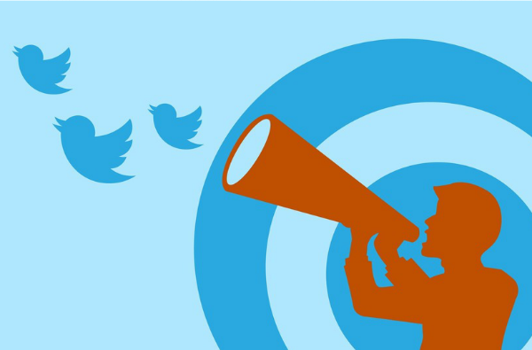
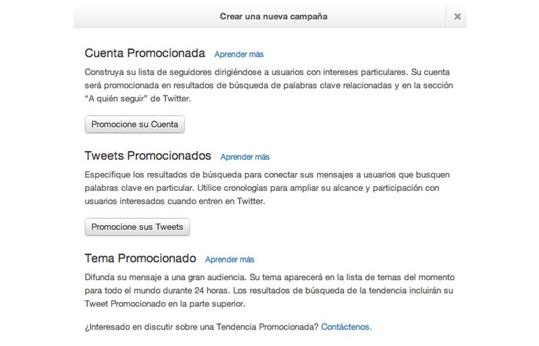
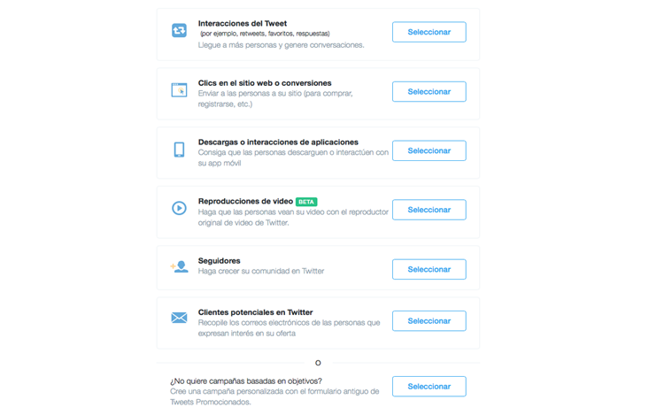
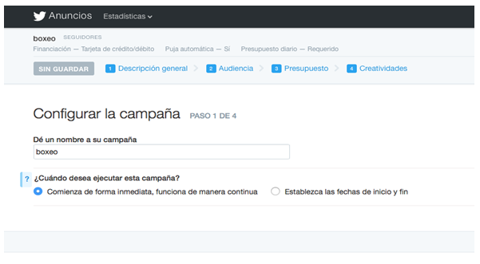
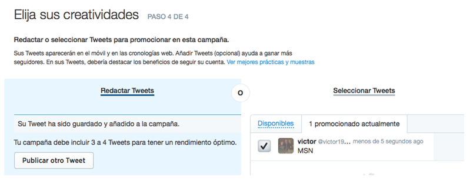

Twitter Ads

Twitter Ads es una de las plataformas de publicidad online más
potentes que existen hoy en día. Incluye la mayoría de las características
de otras plataformas publicitarias, pero además ofrece otras características
exclusivas.
¿Que nos permite hacer Twitter Ads?
Podemos promocionar cuentas, es decir ganar followers y por tanto audiencia.
Promocionar tweets, básicamente dar más visibilidad a una comunicación. Esta
es la manera de generar tráfico también, promocionando un tweet con un enlace
a nuestra página.
Promoted "trend". Es la opción de promocionar un "hashtag" y tener mayor
visibilidad. Este es el formato que tiene un precio fijo.

Twitter ads nos permite hacer una campaña (En esta imagen se ve claramente
en lo que más se va a basar tu campaña ,yo prefiero ganar seguidores)

Lo que tenemos que hacer es darle un nombre a tu campaña

Lo último es lanzar tus tuits

Ventajas:
Twitter tiene un público menos masivo que Facebook pero
algo más fiel. De hecho podría decirse que buena parte de sus
usuarios lo son de forma compulsiva.
Lo bueno es que la plataforma publicitaria Twitter Ads ya es
accesible a todos.
Desventajas:
La mala noticia es que tiene tan pocos meses de vida que
sus funcionalidades son limitadas y no proporciona todos los datos
que a uno le gustaría tener.
En cuanto a la segmentación, es rica y parecida en gran parte a
la de Facebook, sin llegar a tantas opciones.